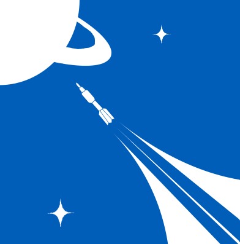

LUNAR HORIZONLUNAR HORIZON translates NASA LRO and JPL Horizons data into a rapid, interactive 3D evaluation of lunar landing sites. Fly the mission with real orbital physics and see at a glance which site and date give a safe soft landing.